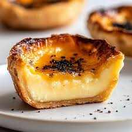
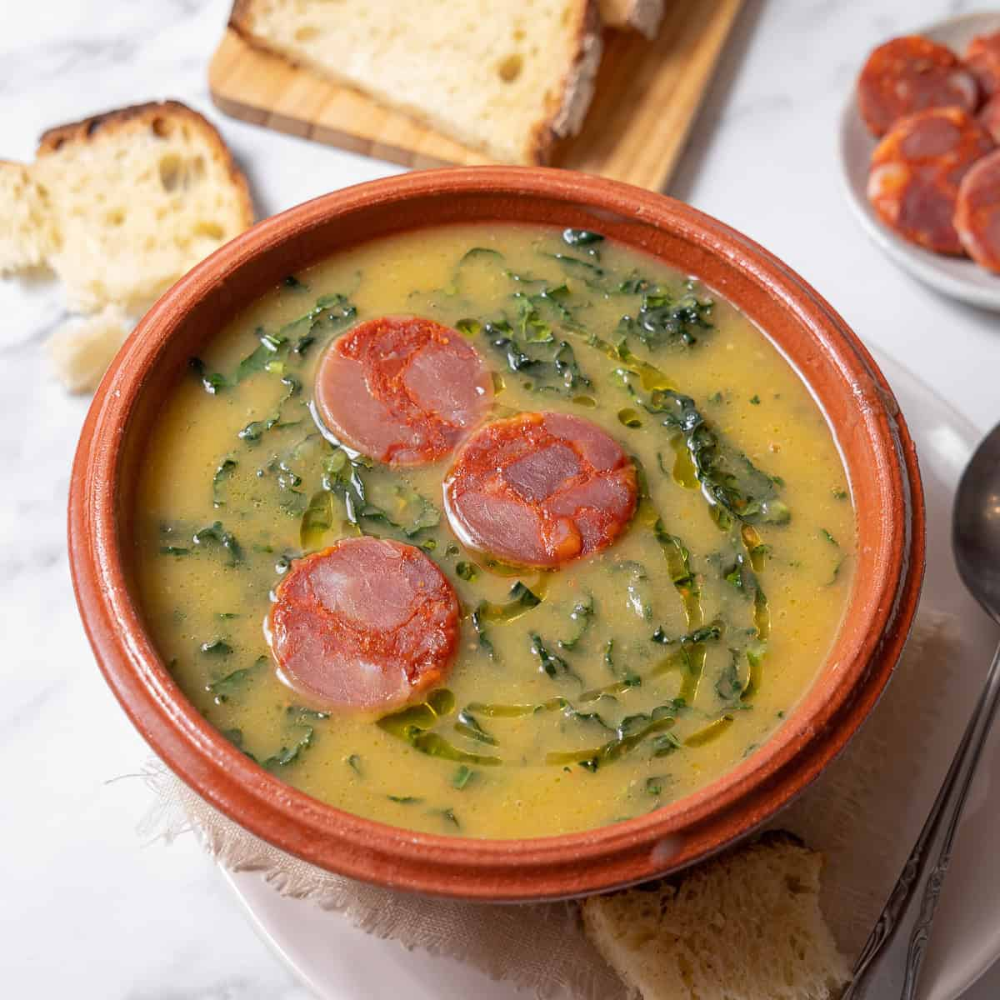
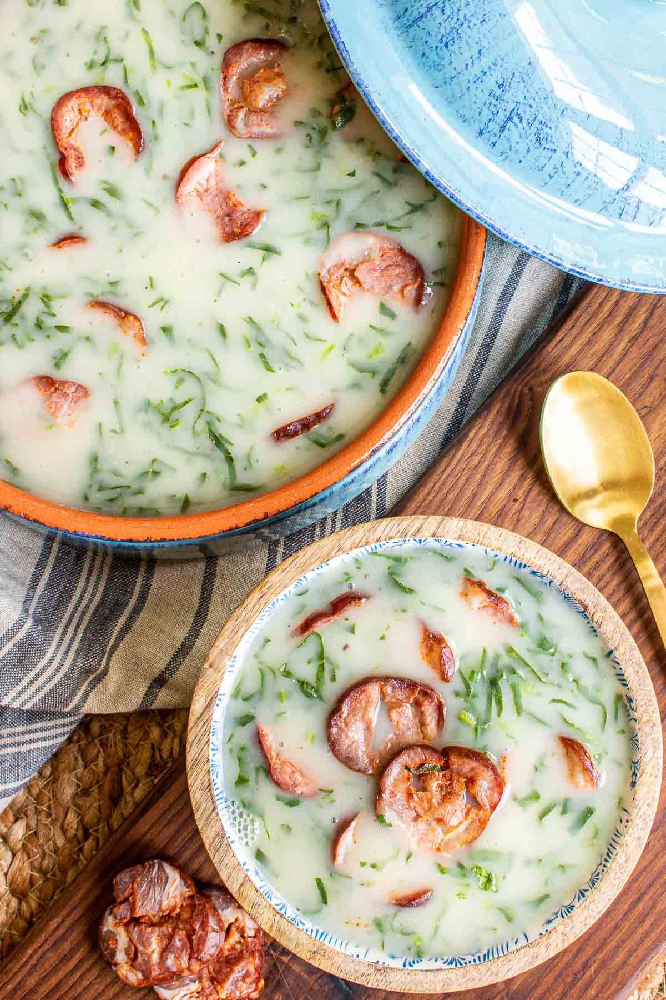
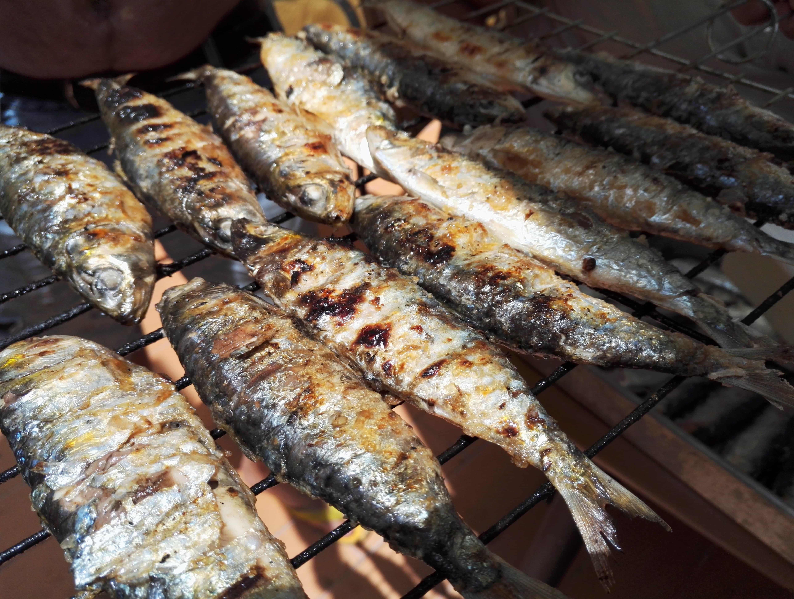
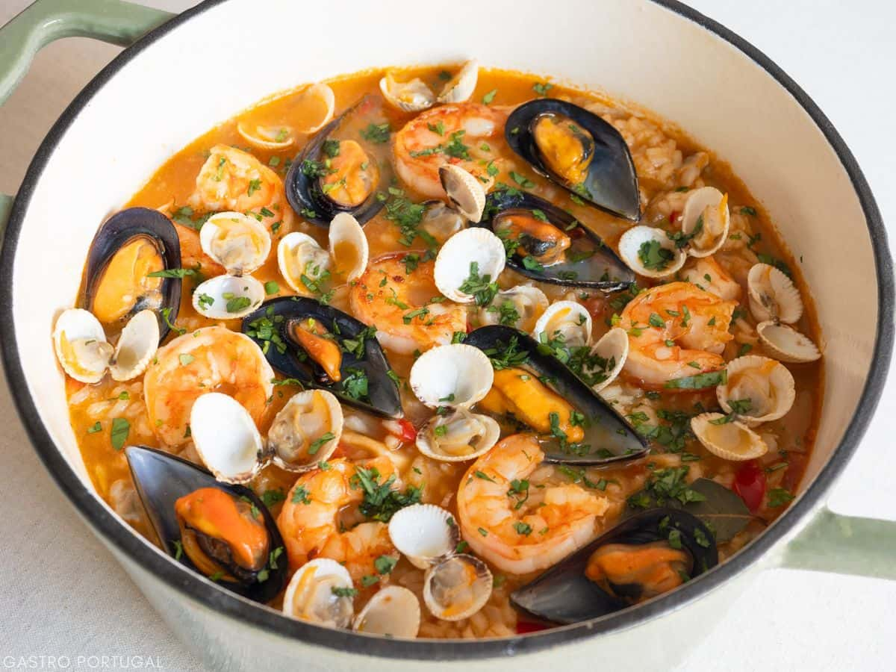
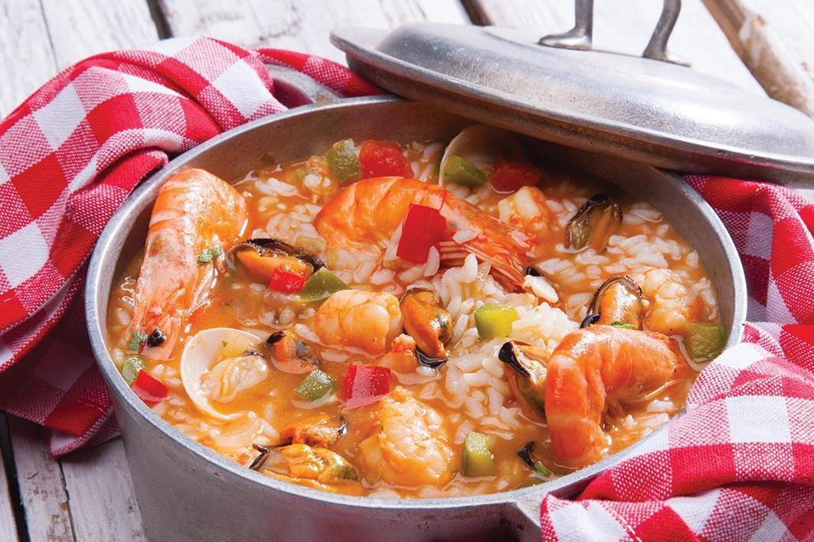
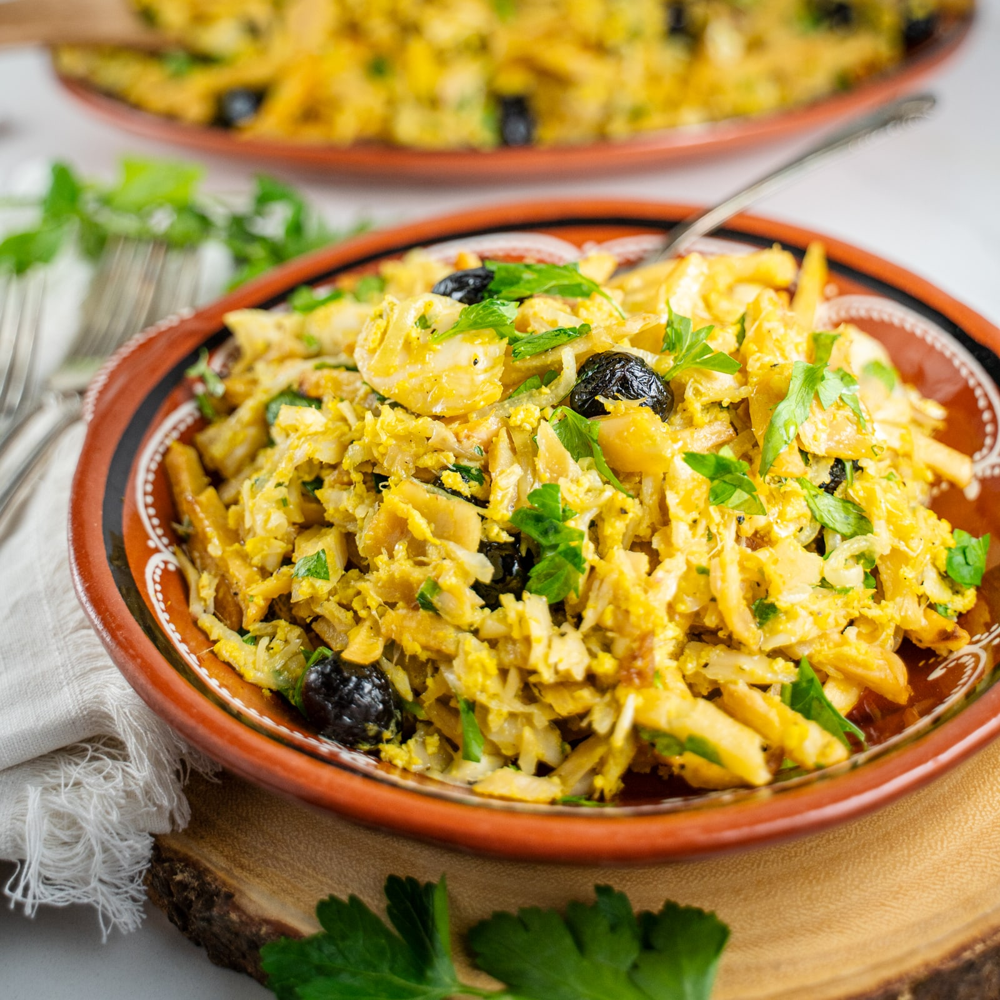
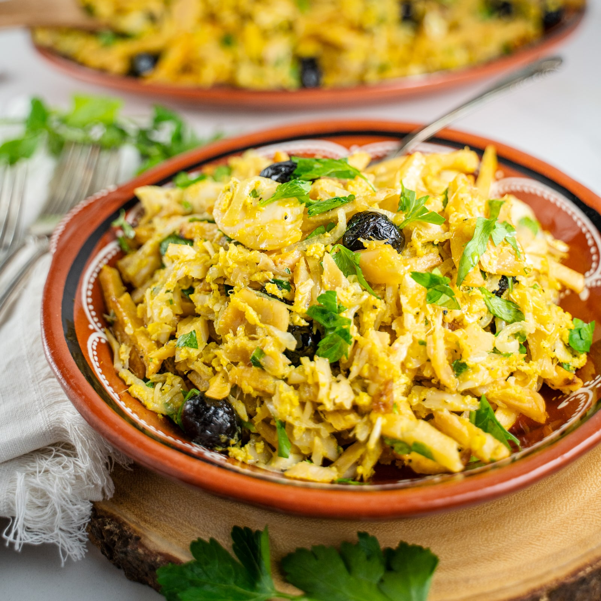
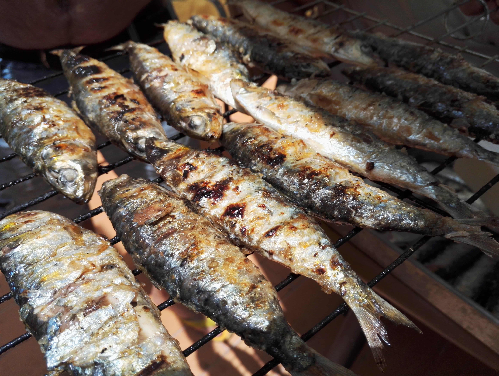
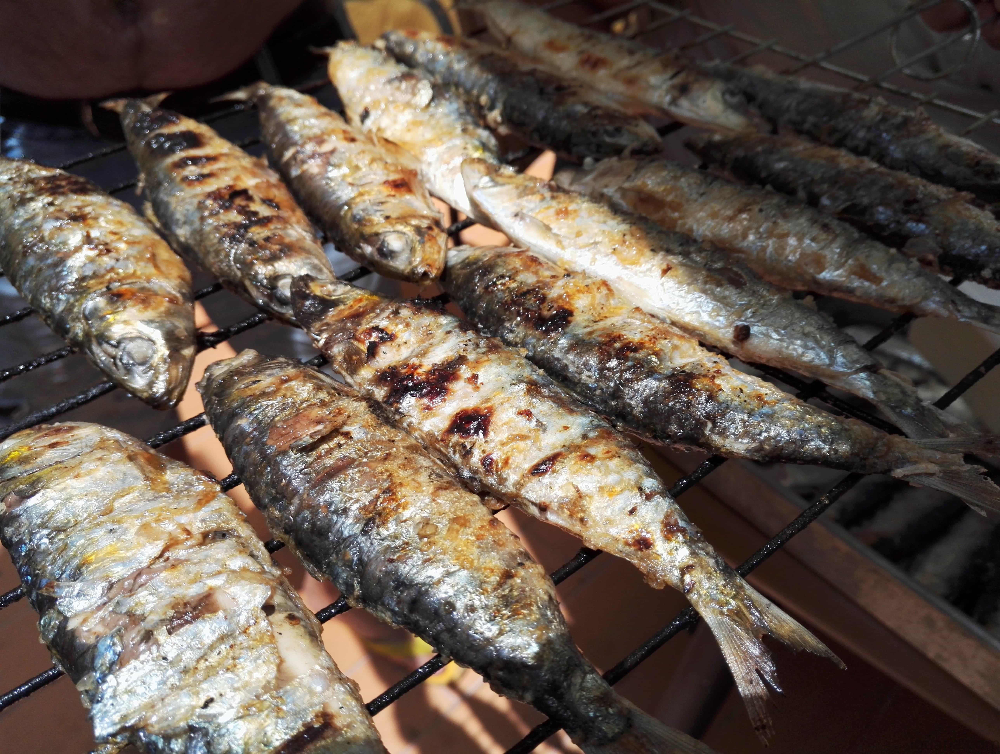

Bacalhau à Brás isn’t just a dish — it’s a beloved taste of Portuguese tradition. Flaked salt cod is combined with golden, crispy
potatoes, onions, and bound together with creamy eggs, finished with a sprinkle of fresh parsley and black olives. Simple yet rich,
it’s a comforting, hearty meal often shared with family and friends. Every bite captures the essence of Portugal — the sea, the sun,
and centuries of culinary craftsmanship, offering an unforgettable taste of coastal heritage.
Pastéis de Nata

Pastéis de Nata aren’t just custard tarts — they’re a sweet bite of Portuguese heritage. Flaky, golden pastry cups cradle a creamy,
caramelized custard, often enjoyed warm with a dusting of cinnamon and powdered sugar. Simple yet irresistible, they’re a favorite in
bustling cafés and pastelarias, bringing people together over a shared love for tradition. Every bite captures the sun-soaked charm of
Portugal, the aroma of freshly baked pastry, and centuries of artisanal craftsmanship — a treat that lingers in memory long after the
last crumb.
Francesinha
Francesinha isn’t just a sandwich — it’s a hearty taste of Porto. Layers of bread, cured meats, and steak are smothered in melted
cheese and a rich, spicy tomato-beer sauce, often served with crispy fries on the side. Bold, indulgent, and comforting, it’s a dish
meant to be shared, savored, and celebrated. Every bite tells a story of Portuguese creativity, local flavors, and the vibrant culinary
spirit of the north — a true culinary icon you won’t forget.
Caldo Verde


Caldo Verde isn’t just a soup — it’s a warm hug from Portuguese tradition. Silky potato base mingles with tender kale and slices of
chouriço, creating a comforting, flavorful bowl perfect for cozy gatherings. Simple yet soulful, it’s a staple at family tables and
local taverns, capturing the heart of Portugal in every spoonful. Every bite tells a story of home, heritage, and centuries of culinary
care — a true taste of Portuguese warmth.
Sardinhas Assadas

Sardinhas Assadas aren’t just grilled sardines — they’re a true taste of Portuguese summer. Fresh sardines, seasoned and grilled over
open flames, release a smoky, savory aroma that fills streets and seaside towns. Traditionally enjoyed with a slice of bread, a
drizzle of olive oil, and the company of friends, each bite is a celebration of Portugal’s coastal heritage. Simple, fresh, and
unforgettable, Sardinhas Assadas capture the sun, the sea, and the joyous spirit of Portuguese life.
Arroz de Marisco


Arroz de Marisco isn’t just a seafood rice — it’s a celebration of Portugal’s coast. Succulent shrimp, clams, mussels, and crab mingle
with tender rice in a rich, flavorful broth, creating a vibrant, aromatic dish. Bold, comforting, and communal, it’s often shared
among friends and family, capturing the essence of Portuguese hospitality. Every bite tells a story of sun-drenched shores, fresh
local ingredients, and centuries of culinary tradition — a true taste of Portugal by the sea.
 



 
